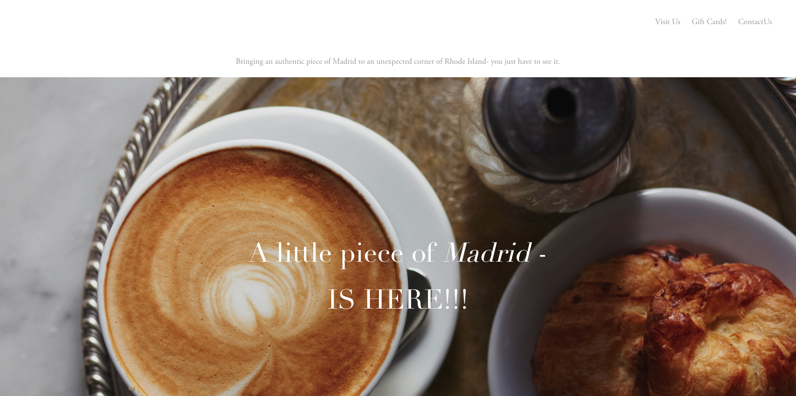

Responsive Redesign Project - Madrid European Bakery
This project redesigns a website with notable design problems, particularly in usability and accessibility. The selected business for which I am redesigning a website is Providence-based 'Madrid European Bakery'
Click here to see the original website Click here to see the redesigned website
We will start by reviewing the original website and its problems, and transition into wireframing and prototyping the redesigned website
Below is a screenshot of the original website's homepage
I chose Madrid European Bakery’s website because it contains accessibility and usability flaws including
low contrast errors, small font size, and overly scattered content, presenting opportunities for improvement.
Problems Identified on the Website
Elaboration on Accessibility
The accessibility problems listed above were detected with the support of "Wave," a web accessibility evaluation tool
The detected problems, as delineated in the above table, align well with problems I had recognized prior to running the test, and will be addressed in my redesign
For a more detailed view of the detected issues, please click on the hyperlink below
WAVE report summaryRedesign: Low-fidelity Wireframing
Below are 3 low-fidelity wireframes for desktop, tablet, and mobile. The annotations correspond to the problem ID's from the table in the previous sections of this website
Since the wireframes are sized differently for each device type, please do not hesitate to zoom in/out for visibility! :)
Desktop wireframe with usability/accessibility annotations
Tablet wireframe with responsive annotations
Mobile wireframe with responsive annotations
Style Guide
Below is a style guide for the redesign
Redesign: High-fidelity Prototyping
Below are 3 high-fidelity prototypes for desktop, tablet, and mobile. The annotations provide styling and responsiveness guidelines
Since the wireframes are sized differently for each device type, please do not hesitate to zoom in/out for visibility! :)
Desktop prototype with styling annotations

Tablet prototype with styling annotations
Mobile prototype with styling annotations